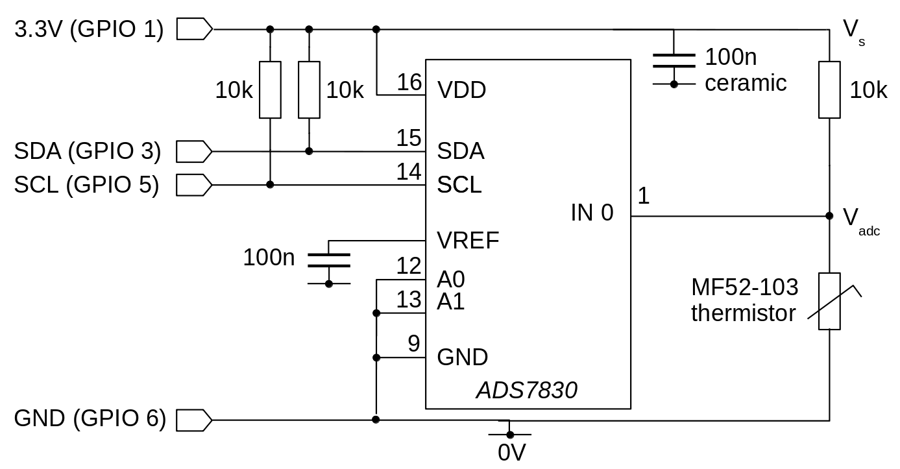

Using an I2C analog-to-digital for temperature measurement on the Raspberry Pi
 In my article on using an I2C ADC with the
Raspberry Pi I described in detail how to use the Texas Instruments
ADS7830 with the Pi's I2C interface. I explained how to
use the ADC chip in a circuit, and how to write C code to
read the analog values, without using any opaque libraries or tools.
In my article on using an I2C ADC with the
Raspberry Pi I described in detail how to use the Texas Instruments
ADS7830 with the Pi's I2C interface. I explained how to
use the ADC chip in a circuit, and how to write C code to
read the analog values, without using any opaque libraries or tools.
In this article I explain how to use the ADC set-up from the previous one for a simple application -- measuring temperature with a thermistor. I'll describe how to calculate the temperature from the values read by the ADC chip, and some of the sources of error you're likely to encounter. There's a bit of algebra, because I like to explain things thoroughly. However, you don't need to be able to follow the calculations -- or even care about them -- to make sense of the simple C program I provide.
If you don't know anything about using I2C ADCs with the Raspberry Pi, I'd suggest reading my introductory article first.
About thermistors
Most materials have an electrical resistance that varies with temperature, but a thermistor is designed to have a particularly striking temperature response. Where a sample of metal may vary its resistance by a tiny fraction of one percent for a temperature change of one degree Celsius, a thermistor's value might change by 5% or more for the same temperature change.
Thermistors are available with positive temperature coefficient (PTC) and negative temperature coefficient (NTC). A PTC thermistor shows an increase in resistance with temperature, and I'll bet you can work out what an NTC thermistor does.
The relationship between the resistance of a thermistor and the temperature is an exponential one -- I'll give the mathematical details later, because we'll need them to write the program.
The behaviour of a thermistor is described using three parameters: the nominal resistance, the base temperature, and the temperature coefficient. The nominal resistance, which I'll denote by R0, is the resistance that the thermistor has at the base temperature, which I'll call T0. The temperature coefficient is a measure of how rapidly the resistance changes with temperature; this is nearly always represented using the symbol β.
In the circuit I'll show later, I use the MF52-103 NTC thermistor, which has β=3950, and a nominal resistance of 10 kilohms at 25 Celsius. This device is available in a range of tolerances, from 1% upwards. Obviously, the closer-tolerance parts will give more accurate results without calibration, but are more expensive; but there are other sources of error that might make calibration preferable to expensive parts -- more on this below.
Physically, a thermistor is an unprepossessing plastic bead, which might as small as a pin-head. The MF52 is about 3mm across, and costs about 50p for the closest-tolerance variety.
The circuit
The simple circuit of the thermistor and the ADC chip is shown below.

The thermistor and a 10k resistor form a voltage divider, such that the value measured by the ADC, VADC, will be half the supply voltage VS at 25 degrees Celsius. Or, at least, very close -- see below. Using a fixed resistor with the same value as the thermistor's nominal value makes the arithmetic for calculating the temperature a lot easier. However, the value of the fixed resistance isn't critical, if you're prepared to adjust the math.
What is critical is that we know the value that will be read by the ADC when VS = VADC. For maximum precision, we'd like that to be the maximum ADC value -- 255 with an 8-bit converter. The ADS7830 has a built-in voltage reference that could be used to supply the potential divider, rather than using the supply voltage. However, fluctuations in the supply voltage don't seem to affect the value read by the ADC chip -- presumably the voltages on its internal measurement circuitry all fluctuate by the same amount.
You may not need the pull-up resistors shown in the circuit diagram, as recent Pi models have these built in, and enabled by default.
It should be obvious, but the thermistor should be located where you want to measure the temperature, and away from any unwanted heat sources. The ADC chip itself doesn't generate any detectable heat, but the Raspberry Pi board does. If you're measuring outdoor temperature, the thermistor needs to be out of air currents, or it'll be measuring wind chill. If it's in an air-tight enclosure, it will respond only slowly to temperature changes, but that may not be a problem if you're measuring ambient temperature.
Calculating the temperature from the ADC reading
The program will need to convert the value read from the ADC -- which will be a number in the range 0-255 -- into a temperature. To do this conversion we will need to make use of the mathematical relationship between the thermistor's temperature and resistance.
The thermistor has a resistance RT at some temperature T that is determined by the following expression:
$$ R_T = R_o e^{\beta (\frac{1}{T} - \frac{1}{T_o})}, $$
where R0 is the nominal resistance of the thermistor at base temperature T0. For the device I've chosen, R0 is 10k ohms at T0 25 Celsius. It's important to remember that, in the expression for R0, all temperatures are in absolute (Kelvin) values, which are 273.15 degrees larger than Celsius temperatures.
For tidiness, let
$$ Q = \frac{1}{T} - \frac{1}{T_o}, $$
so
$$ R_T = R_o e^{\beta Q}. $$
Q is, essentially, what we need to find: if we know Q, it's easy to find T.
For the voltage divider shown in the circuit diagram:
$$ V_{adc} = V_s \frac {10000} {R_T + 10000}. $$
For convenience, let
$$ V_{adc} / V_s = P. $$
P will be determined directly from values taken from the ADC -- it is a measurement, that we will use to find Q and, hence, the temperature. So
$$ P = \frac {10000}{R_T + 10000}. $$
Substituting for RT and expanding, we get
$$ P R_0 e^{\beta Q} + 10000 P = 10000. $$
But, in fact, R0 is 10k, because we chose it that way, so
$$ P e^{\beta Q} + P = 1. $$
With a bit of algebra we get
$$ Q = \frac{1}{\beta} log (\frac {1-P}{P}). $$
Substituting the value of Q we had earlier, we end up with T, the temperature, in terms of things we know or can measure:
$$ T = \frac {1}{log(\frac{1-P}{P}) / \beta + \frac{1}{T_0}}. $$
Remember that P is just the faction of the maximum value seen by the ADC -- typically the value read, divided by 255. We know this, so we can work out T.
Here is the relevant section of code, that calculates the temperature based on the ADC reading. You can download the full source here.
// Absolute zero, in Celsius #define T_ZERO -273.15 // Base temperature of the thermistor, in Celsius. #define T_BASE 25.0 // Temperature coefficient of resistance of the thermistor. #define BETA 3950.0 // Base temperature of the thermistor in absolute units. #define T_BASE_K (T_BASE - T_ZERO) // Read ADC value into data[] double A = data[0] / (double)MAX_ADC; double L = log ((1 - A) / A); double T = 1.0 / (L / BETA + 1 / (T_BASE_K)) + T_ZERO; // Do something with the temperature T...
There's a bit of additional complexity in the code, because it produce a result in degrees Celsius, rather than absolute temperature.
How well does this circuit work?
The main source of error in the calculated temperature follows from the uncertainties in the properties of the thermistor and the fixed resistor. Not only will these uncertainties directly bias the measurements, but they will invalidate the mathematical analysis, which relies on the resistances being equal. Of course, you can always re-work the arithmetic without assuming equal resistances. It isn't difficult, but you'll need a large sheet of paper to write out the final result.
Using 1% tolerance parts for both components, it's probably fair to say that the uncertainty in the final calculated temperature will be at least 2%; but the exponential nature of the arithmetic makes it hard to come to general conclusions. My experience is that the simple circuit, with careful assembly using close-tolerance parts, gives readings that are in broad general agreement with other domestic thermometers -- even without calibration -- but I doubt it would stand comparison with laboratory equipment.
For accurate results, you'll need to calibrate the circuit, such that the thermistor and the fixed resistor have equal resistance at the base temperature. It actually doesn't matter much what the resistances are, so long as the values are equal.
One way to build calibration into the circuit is to replace the 10k fixed resistor with a series combination of an 8k2 resistor and a 2k2 precision trimmer. You could warm the circuit to the base temperature (usually 25 Celsius), and then adjust the trimmer so that the voltage at the input to the ADC is exactly half the supply voltage. Alternatively, at any stable temperature, adjust the trimmer so that the calculated temperature matches the value reported by a lab thermometer. The calibration will hold for other temperatures, within the tolerance of the temperature coefficient of the thermistor.
For lab-grade accuracy, you'll need to measure the ADC value at a range of stable temperatures, using a thermally-controlled bath, and construct a lookup-table. Such a process is beyond the scope of this article.
Whether any of these calibration steps are needed, of course, depends on the application. It's important to understand that, however carefully you calibrate, a simple circuit like the one presented here isn't going to be as accurate as a laboratory instrument. There are all sorts of sources of error -- temperature-related resistance fluctuations in the fixed resistor, the limited intrinsic accuracy of a cheap ADC chip, self-heating of the thermistor, the non-infinite input resistance of the ADC, to name just a few. Stepwise calibration at a range of different temperatures will fix all these errors; but if you have the expertise and equipment for such a task, and need for it, why are you measuring temperature using a Rasperry Pi?
Still, for applications like fan control, weather monitoring, and central heating control, even the simple circuit might well be accurate enough for practical purposes.
Closing remarks
An I2C ADC and a thermistor provide a simple, low-cost way to add temperature measurement to the Raspberry Pi or similar device. The total cost of parts is only a few pounds, and accuracies are comparable with ordinary domestic thermometers. You probably wouldn't want to use this technique for medical or laboratory work.